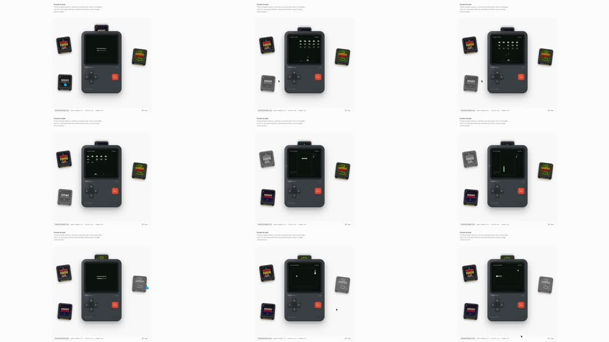

404 page as a toy: 'Pocket Arcade' - a chunky retro handheld console center-page playing tiny games on its screen (invaders, snake, pong) while game cartridges float and bob around it; the screen glitches between games.

Build a 404 'Pocket Arcade' page. Center: a chunky handheld console in CSS (dark grey body radius 24, inset screen bezel, D-pad cross, one red action button, speaker slits, soft floor shadow). Screen = a low-res canvas (~160x144, image-rendering: pixelated) cycling mini-games: (1) invaders - alien grid sidesteps and descends, ship auto-fires; (2) snake - 90deg turns, grows on dots; (3) breakout - ball, paddle, bricks. All entities move on a pixel grid with steps() timing - no smoothing. Between games: 300ms glitch (horizontal band displacement + noise), then next game boots. Around the console, 3-4 cartridge sprites (small pixel-art labels) float with independent sine bobs (amplitude 8-14px, period 3-5s, +-4deg rotation). Every ~8s one cartridge eases toward the console's top slot and snaps back. Header: '404' + 'Pocket Arcade' + line about the page being missing, plus a home link.